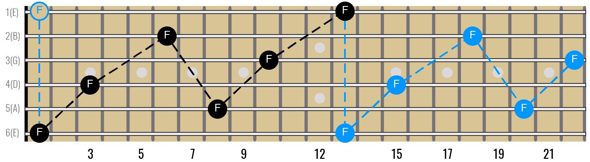
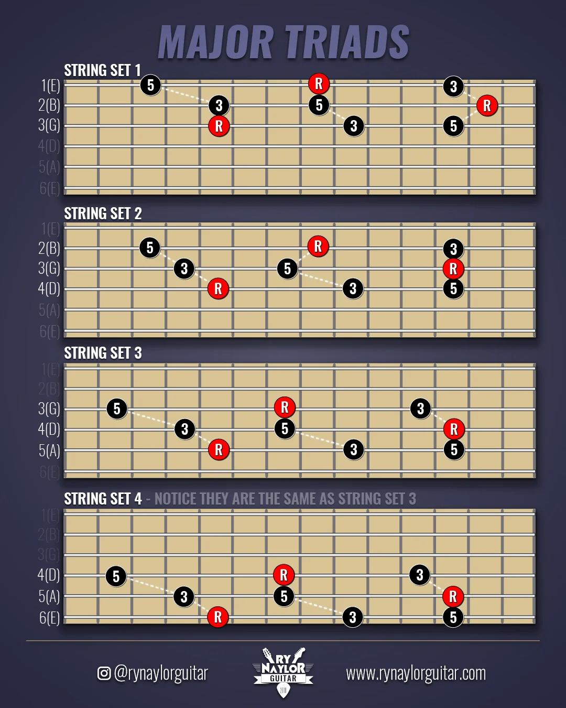

Introduction
What are the base attributes and skills needed to be a good musician?
• Experienced Ears (The ability to hear music, and know whats going on.)
• A well developed sense of timing. (The ability to play in time and with different feels and meters)
• Knowledge of how your instrument works and the physical ability (technique) to be able to play it well.
• Music Theory (A broad understanding of how music works and the ability to articulate it)
What are the base skills and attributes needed to be a good guitar player?
• all of the above music skills
• good tone
• ability to play appropriate rythym parts (big chords vs little chords) (busy struming vs sparse strumming) ect
• ability to play lead in different styles
• knoledge of how the guitar works and knowing the basic chord shapes and scales
What am I going to focus on in this article?
•The must know concepts, shapes, and patterns to be a well rounded guitar player that can play rythym and lead in a variety of styles, and genres.
Fretboard IQ
Prerequisites
You should know open chords. A, Am, C, D, Dm, E, Em, F, G.
Including 7th chords
A7, Am7, C7, D7, E7, Em7, G7
You should understand some basic strumming patterns and be able to play some songs all the way through including
You should know some riffs and licks.
You should know string names.
2 More Prerecs Most People Dont Learn
String Numbers and up and down
Strings are numbered from the high E to the Low E. High E is 1


Up and Down
When a musician say up...
Here We Go
Learn the Notes on The E and A Strings First
Learning the notes on the E and A string will be very useful when using barre chords, power chords, and scales. Also with the octive trick I am going to show you later you can know the name of any note on the fretboard instintaniously if you know the notes on the E and A string.

Barre Chords and the Caged System
The Caged System is simply getting the most out of barre chords.
Standard tuning octive hack to not have to learn the whole fretboard.
The most beautiful thing about the guitar is that it is shape based. You can often learn one shape for something and use it in every key and multiple octives. An example of this would be barre chords(I'll explain that later.)
These two shapes actually create the same interval, an octive, we will get into what that is and how it works later but for now all you need to know is that if you play the shape from the top two photos from the 6-4th strings or from the 5-3rd strings both notes you are playing will be the same note, one will be an octive higher but they will be the same note.
The only difference between this shape and the next shape is that the second shape requires you to move your second finger one fret further.

Knowing these two shapes allows you to quickly find the name of any note on the fretboard simply by knowing the notes on the Low E string and the A string.
If you want know the notes on the Low E string you also know all of the notes on the high E string becasue they are both tuned to E. So whatever the note on the fifth fret of the low E string is (A) it will be the same on the fifth fret of the high E string.
So great I memorized two string worth of notes and now I know three strings worth of notes. Fun trick. What about the other three strings?
These octive shapes give us another easy trick.
If you want to know the name of a note on a string other than the E or A string you can use the octive shape to trace it back to the E or A string which you do know.
For examample: if you wanted know all the notes on the Low E string and you wanted to know what note is on the third fret of the D string you could simply put make the first octive shape with your second finger on the third fret of the D string and whatver note your first finger is on is the same note. So in this case your first finger is on the first fret of the Low E string which is an F so the third fret of the D string must be an F.


How to Get The Most Out of the Pentatonic Scale
What is the pentatonic scale
How to learn it
Major vs Minor and mixing
How does it work
Triads
What is a triad?
A chord is just three notes right?
Here is every major chord shape, that does'nt repeat any notes, on the entire fretboard.
Here are the minor ones

Whatever note the root is on is the chord you are playing.